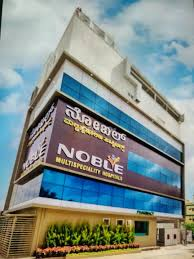

About Heart Consultation
Heart health is critical, and consulting the right specialists ensures effective treatment and care. We bring you a list of the best hospitals and cardiologists in Bhopal to address heart-related conditions such as coronary artery disease, arrhythmias, and heart failure. Our directory ensures you get access to world-class medical facilities and experienced doctors.
Top Hospitals for Heart Problems in Bhopal
AIIMS Bhopal
Specialties: Cardiology, Cardiac Surgery, Electrophysiology
Facilities: Advanced cardiac diagnostics, Emergency care, Intensive Cardiac Care Unit (ICCU)
Address: Saket Nagar, Bhopal, Madhya Pradesh
Helpline Number: 0755-2982607
Bansal Hospital
Specialties: Cardiac Rehabilitation, Angioplasty, Open Heart Surgery
Facilities: Catheterization lab, Emergency heart care, 24x7 pharmacy
Address: Shahpura, Bhopal, Madhya Pradesh
Helpline Number: 0755-4086000
Chirayu Hospital
Specialties: Preventive Cardiology, Interventional Cardiology, Heart Failure Management
Facilities: Non-invasive cardiology lab, ICU, Telemedicine services
Address: Bairagarh, Bhopal, Madhya Pradesh
Helpline Number: 0755-2709100
Noble Multispecialty Hospital
Specialties: Coronary Artery Bypass Surgery, Pediatric Cardiology, Valve Replacement
Facilities: Advanced imaging, 24x7 heart emergency services, Post-operative care
Address: Kolar Road, Bhopal, Madhya Pradesh
Helpline Number: 0755-2488008
People’s Hospital
Specialties: Heart Transplant, Congenital Heart Disease, Peripheral Artery Disease
Facilities: Cardiac MRI, Holter monitoring, Emergency cardiac care
Address: Karond, Bhopal, Madhya Pradesh
Helpline Number: 0755-4005100
Top Cardiologists in Bhopal
Dr. Rajesh Kumar
Specialty: Interventional Cardiologist
Hospital: AIIMS Bhopal
Experience: 15 years
Dr. Skand Kumar Trivedi
Specialty: Cardiologist
Hospital: Bansal Hospital
Experience: 35 years
Dr. Neeraj Sharma
Specialty: Cardiothoracic Surgeon
Hospital: Chirayu Hospital
Experience: 12 years
Dr. Sameer Joshi
Specialty: Electrophysiologist
Hospital: Noble Multispecialty Hospital
Experience: 18 years
Dr. Poonam Verma
Specialty: Preventive Cardiologist
Hospital: People’s Hospital
Experience: 8 years
Dr. Ramesh Yadav
Specialty: Heart Failure Specialist
Hospital: AIIMS Bhopal
Experience: 14 years
Dr. Sunita Agarwal
Specialty: Cardiac Surgeon
Hospital: Bansal Hospital
Experience: 9 years
Dr. Vivek Jain
Specialty: Congenital Heart Disease Specialist
Hospital: Chirayu Hospital
Experience: 16 years
Dr. Sneha Pathak
Specialty: Cardiologist
Hospital: Noble Multispecialty Hospital
Experience: 11 years
Dr. Alok Mishra
Specialty: Cardiac Rehabilitation Expert
Hospital: People’s Hospital
Experience: 13 years